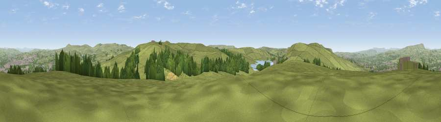

Viewpoint near Walk Mill
#9405 in England · top 11% of its area beats it · near Walk MillThe view, rendered

A 360° render of this exact spot computed from the terrain model, tree cover and land cover — summer colours, afternoon light, calibrated against photographs of famous viewpoints. Real trees, hedges and buildings will differ in detail.
The panorama
Grey silhouette: terrain skyline in each direction (720 bearings, Earth curvature and refraction included). Dashed green: skyline with trees (+15 m) and buildings (+8 m) as obstacles. Blue strip: how far the ground is visible on each bearing.
Where the view opens
Wedge length = distance to the farthest visible ground on that bearing (vegetation-aware). Rings at 10, 25 and 50 km.
What fills the view
78% grassland · 15% woodland · 5% built-up ·
Angular shares of the visible panorama (visual magnitude), not map area. Landscape diversity 0.31 (0–1 Shannon).
Key numbers
More beautiful places nearby
The staircase of upgrades: each row has a higher view potential than everything closer. Driving times are estimates from straight-line distance, calibrated against real road routing — check an actual route before setting out.
| Place | Direction | Drive | Score |
|---|---|---|---|
| Black Hill | WSW · 2 km | ~6 min | 64.8 |
| Viewpoint near Loveclough | WSW · 3 km | ~6 min | 68.8 |
| Great Hameldon | W · 4 km | ~10 min | 74.2 |
| Viewpoint near Edenfield | S · 11 km | ~21 min | 77.5 |
| Darwen Hill | WSW · 18 km | ~31 min | 80.7 |
| White Brow | SW · 25 km | ~40 min | 82.9 |
| Warton Crag | NW · 55 km | ~77 min | 83.2 |
| Viewpoint near Grange-over-Sands | NW · 66 km | ~89 min | 83.4 |
53.76182, -2.24759 · source: screening · position refined by local search. Computed location — check access rights before visiting.